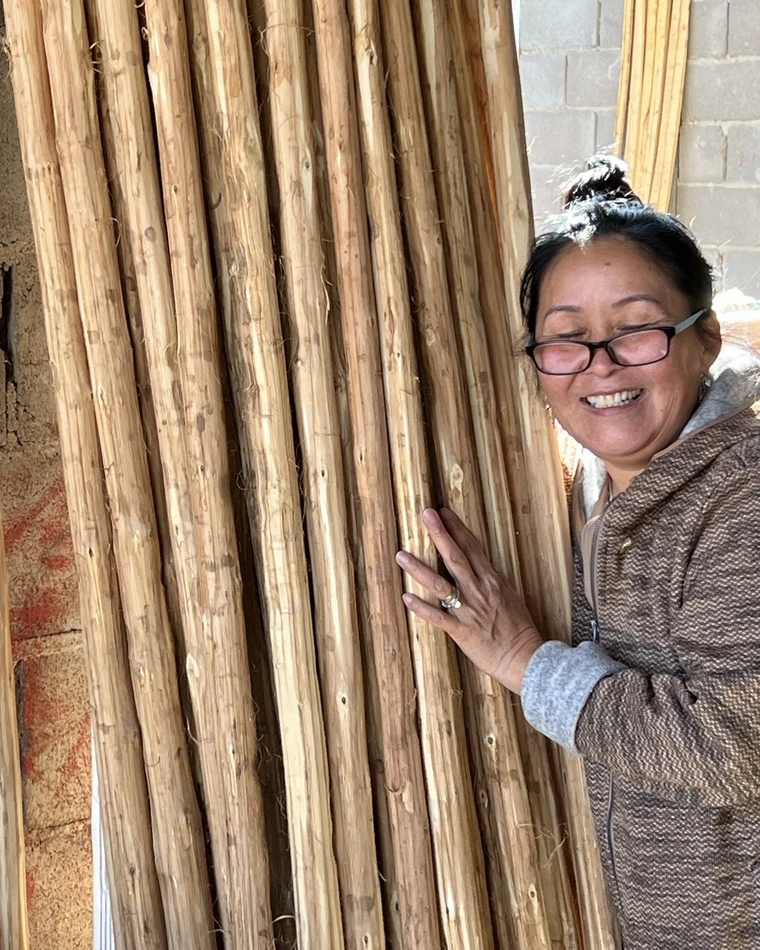

The partners
Three partners, one craft.
Not a company and its vendors. Three partners in one venture: a Kyrgyz operations lead, a third-generation master builder in Kyzyl-Tuu, and an international partner who has spent his life belonging to the communities he works in. We do not hide who we are. We shine it.

Nura
Partner · Operations
Nura is Kyrgyz, and she runs Tündük from home. Production coordination, quality control, the bill of materials, freight. If a Boz Üy leaves Kyrgyzstan, it leaves under her eye.
She did not come from somewhere else to do this. This is her country, and her people's craft, and she builds the business the way she wants to be proud of it: fair to the makers of Kyzyl-Tuu, on terms they trust, in their own language. Profit is the last thing on the list, not the first.

Adylet
Partner · Master Builder, Kyzyl-Tuu
A third-generation master builder in Kyzyl-Tuu, the village that is the world centre of the craft. Adylet leads the family workshop that builds every Tündük Boz Üy, the same hands, to one standard.
He records a full video walkthrough of each unit before it leaves Kyrgyzstan. Nothing ships that he has not stood inside. He is not a supplier we found. He is a partner we build with.
Yossi GhinsbergJusup Tulucadam
Partner · The International Bridge
Yossi belongs where most outsiders only visit. In Kyrgyzstan he carries a Kyrgyz name, Jusup Tulucadam, and he means it. A planetary citizen who comes to give, not to take.
It is a pattern with a record. In the Bolivian Amazon, the Uchupiamonas people made him one of their own and their ambassador to the world, which he remains. With them he co-founded Chalalán, an award-winning ecolodge owned and run by the community inside Madidi National Park. As vice president of CITA International he went on to found twelve centres for the humane treatment of opiate addiction, from Mexico to China.
He works with the makers of Kyzyl-Tuu the same way. Not a trader passing through, not a brand borrowing a culture. A partner who belongs at the table.